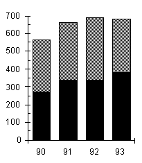
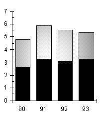
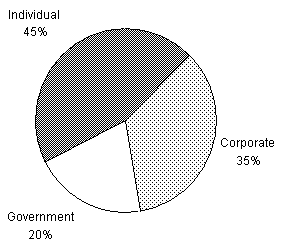

PROFIT AND REVENUE DISTRIBUTION FOR ZIPPY PRINTING, 1990–1993, COPYING AND PRINTING.
Total Profit Total Revenue
(in thousands of dollars) (in millions of dollars)
 
Distribution of Profit from Copying, 1992
(in thousands of dollars)

In 1992, the profit from copying for corporate customers was approximately how much greater than the profit from copying for government customers?
$119,000 – $68,000 = $51,000
The answer is (A).